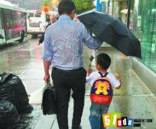

说出你的爱
Speak Loudly You Love
相册中的亲情
那些成长的足迹
都是父母给我们最无私的爱，父母的爱是威严的、沉默的、忧郁的、深远的。
第一次学走路
还记得你小时候的样子吗？当我们一步步长大，直到迈出人生第一步，是我们父母牵着我们的手
第一次学说话
还记得你小时候的样子吗？当我们一步步长大，直到发出第一个字，是我们父母千遍万遍的教导
第一次学写字
第一次握着笔，第一次学写字，是父母大手握小手，教我们写出自己的名字
父母撑伞
还记得他们送你上学的时候吗？还记得那个下雨天吗？
父亲的背影
当我们一步步长大，到现在上大学时，父母也老了，他们不在年轻，背影也多了几份迟缓